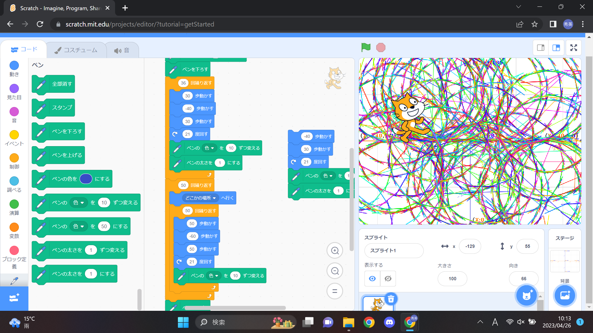
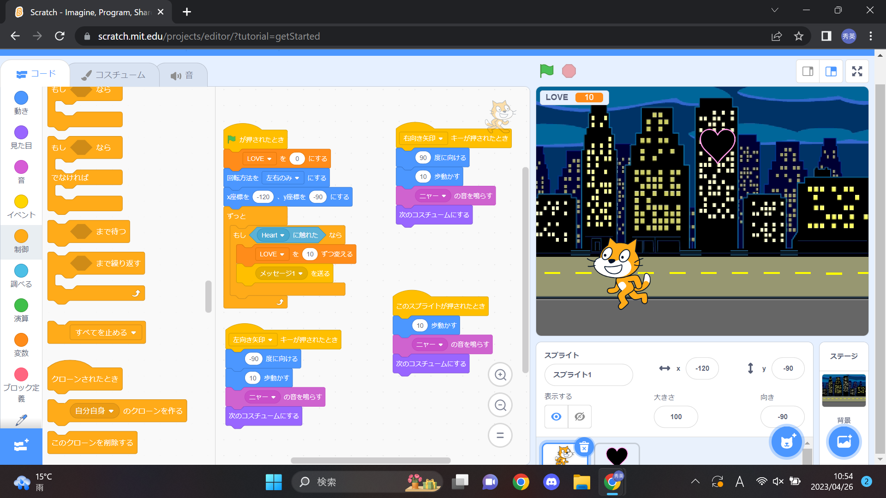

1週目のレポート ： 公大高専１年実習I-1
4a班8番 英
第1週目
1-1 サイエンスアート

1.内容
スクラッチを使って線を書くプログラムを学び、応用して様々なサイエンスアートを描くことをした。
そのサイエンスアートをスクリーンショットをして、ファイルに名前を付けて保存した。
2.感想
少しのプログラムだけでは単純なアートしか描かれなかったが、プログラムを増やしていくと描かれていくアートがより複雑になっていき面白かった。
プログラムを実行する前にどのように動くかを事前に予想しておくと失敗した時に、どこがミスっているのかがわかりやすくなると思うので大事だと考えた。
1-2 ゲーム

1.内容
スクラッチを使用しブロックプログラミングで猫を動かして落ちてくるLOVEを回収するゲームを作成し、そのゲームを遊んだ。
そのゲーム画面をスクリーンショットをして、ファイルに名前を付けて保存した。
2.感想
なんとなくゲームがどのようなプログラミングがされていて、どのように動いているかが分かった。
ゲームがどのようにしたら動くのか、どうしたら面白くなるのかを考えながら作るのが楽しかった。
1-3 ホームページ作成
私のホームページ
1.内容
githubにサインインしてアカウントを作り、githubを使用して自分の自己紹介のホームページを作成した。
その後、自己紹介のホームページを先生に提出し、レポートのホームページの作成をした。
2.感想
今回はHTMLのコードが打たれており日本語を打つだけだったが、コードも自分で打つとなるととても難しくなるのではないかと考えた。
HTMLのコードを見て、自分の想像していたプログラミングで憧れがあったので楽しかった。